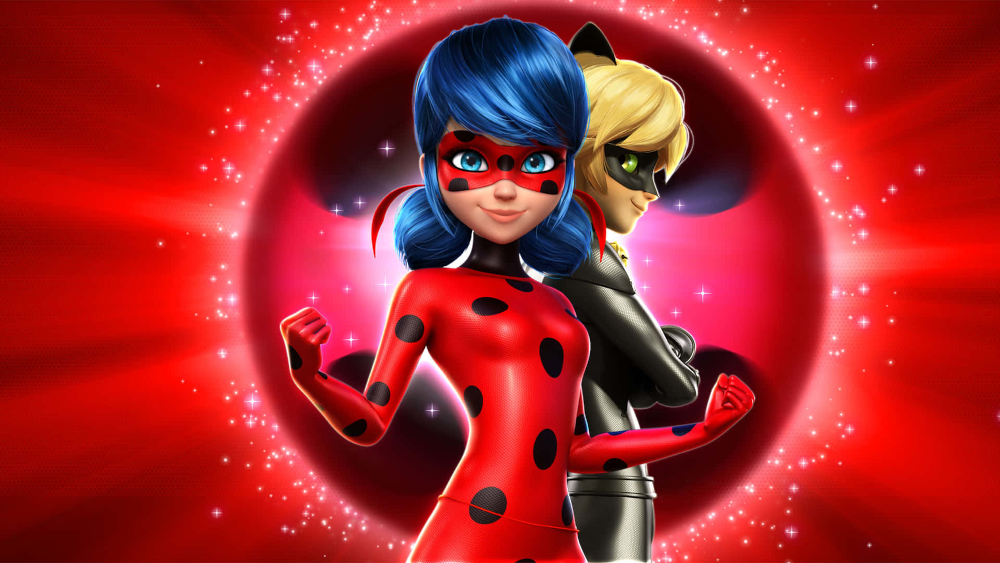

Miraculous: As Aventuras de Ladybug acompanha Marinette Dupain-Cheng, uma corajosa garota que esconde uma identidade secreta: ela é a
Ladybug, uma heroína inconfundível. Decidida a combater todos os perigos da cidade de Paris, a jovem embarca em uma jornada repleta de
desafios e aventuras. No entanto, ela não está sozinha, pois conta com a ajuda de Adrien Agreste – ou Cat Noir –, seu amigo e paixão
secreta. Para enfrentar os vilões, eles utilizam jóias mágicas conhecidas como Miraculous. O principal inimigo de Ladybug e Cat Noir
é o Hawk Moth, um vilão perigoso que pretende roubar as jóias. Para isso, ele utiliza akumas, borboletas enfeitiçadas com energias
negativas. Quando soltas pelas ruas de Paris, elas transformam pessoas comuns em vilões malignos quando sentem emoções negativas.
Mas Marinette e Adrian não irão recuar. Os dois tentaram de tudo para enfrentar Hawk e acabar com seus planos de destruir a cidade
francesa.

A abertura de "Miraculous: As Aventuras de Ladybug" é uma verdadeira obra-prima animada que não apenas
abre as portas para um universo de fantasia, mas também captura imediatamente a atenção do público com
sua estética visual deslumbrante e energia contagiante.